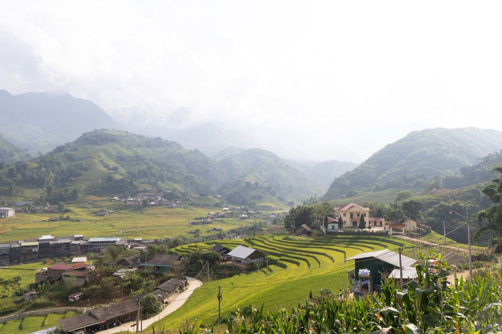
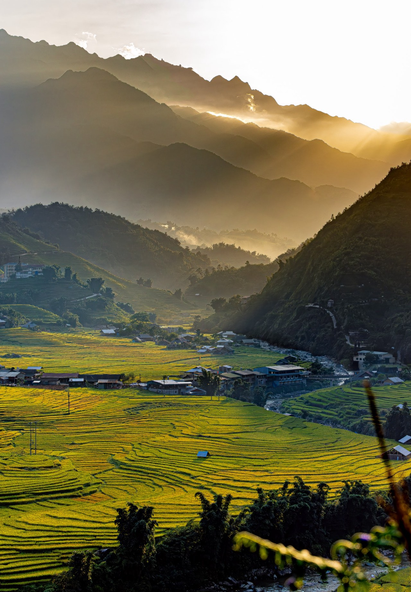
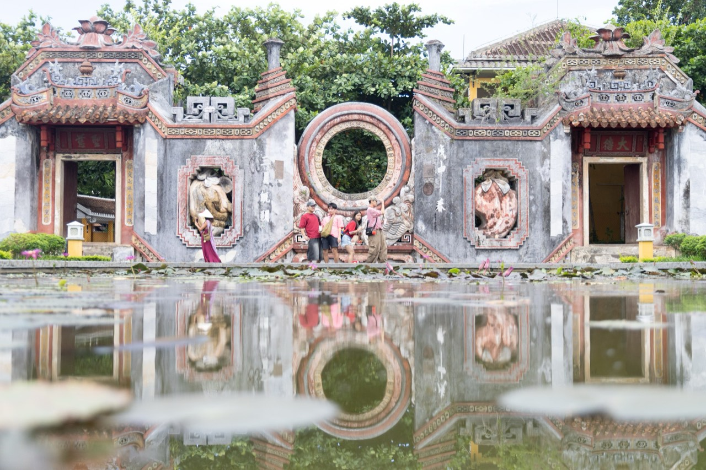

Vietnam
Hanoi, Ha Long Bay, Sapa, Da Nang
2026.8
Photographs






The guide for this country is not written yet.
Back to destinationsHanoi, Ha Long Bay, Sapa, Da Nang
2026.8



The guide for this country is not written yet.
Back to destinations